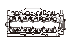
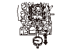
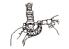
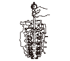
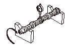
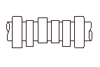

カムシャフトの点検
カムシャフト スプロケットを取外す。
ロッカ シャフト ホルダAssy.を取外し
,
ロッカ シャフト ホルダAssy.を分解する。
ロッカ シャフト ホルダ ブリッジまたはロッカ シャフト ホルダを取付け、規定トルクで数回に分けて締付ける。
規定トルク
－
:
15N･m(1.5kgf･m)
:
9.8N･m(1.0kgf･m)

カムシャフトの軸方向のがたを点検する。
•
カムシャフトをNo.1ピストンの上死点位置（ノック ピンを上にする）にして点検する。
•
ダイヤル ゲージをセットし、反対側を押し引きしてダイヤル ゲージを読む。
•
限度値以上の場合はスラスト カバーを交換して再点検を行う。再点検時も限度値を越える場合はカムシャフトを交換する。
カムシャフトの軸方向のがた
標準値:
0.05－0.25mm
限度値:
0.5mm
カムシャフトを取外す。
カムシャフトを洗浄し、カムおよびジャーナル部に損傷のないことを確認する。
シリンダ ヘッドのベアリング部を洗浄し、ベアリング部に損傷のないことを確認する。

カムシャフト ジャーナル部の外径を測定する。
シリンダ ゲージをカムシャフト ジャーナルの外径に合わせる。

シリンダ ヘッドのベアリング部にシリンダ ゲージを挿入し、カムシャフトのオイル クリアランスを点検する。
•
点検は全てのジャーナル部について行う。
•
限度値以上の場合はシリンダ ヘッドを交換して再点検を行う。再点検時も限度値を越える場合はカムシャフトを交換する。
カムシャフトのオイル クリアランス
標準値:
0.045－0.084mm
限度値:
0.100mm

カムシャフトの振れを測定する。
•
両端のジャーナル部をVブロックなどで支える。
•
ダイヤル ゲージでカムシャフトの振れを点検する。
•
カムシャフトを回転させながら点検する。
•
限度値以上の場合はカムシャフトを交換する。
カムシャフトの振れ
標準値:
0.03mm以下
限度値:
0.04mm

カム面の損傷、摩耗を点検し、カムの高さを測定する。
カムの高さ（標準）
インテーク
エキゾースト
PRI
35.241mm
35.471mm
SEC
36.173mm
カムの位置

 －
－
 :
: